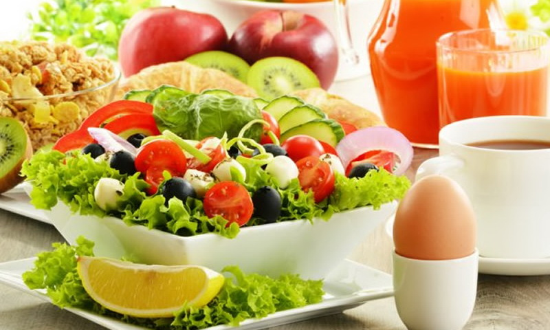

Правильное и лечебное питание

По материалам книги Михаила Мееровича Гурвича
" Питание для здоровья. "
Народные рецепты исцеления"
Уважаемый Читатель - после ознакомления с Книгой
рекомендую Вам заказать ее бумажное издание.
Михаил Гурвич – известнейший диетолог, гастроэнтеролог, врач высшей квалификации, кандидат медицинских наук, более 40 лет проработавший в Клинике лечебного питания РАМН.
Знаменитый писатель, автор почти 50 книг, изданных у нас и за рубежом тиражом более 3 млн экземпляров.
Почетный член Российской диабетической ассоциации.